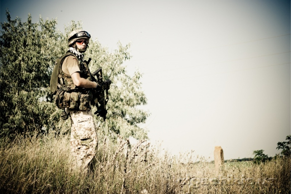

Огромное спасибо оргам за титанический труд!!! Я всегда поражался вашим энтузиазмом. Спасибо всем играющим. Игра как всегда была на высоте. Игру делают сами игроки. И кто играл и отыгрывал думаю со мной согласятся. Спасибо всем талибам, кто сражался со мной плечом к плечу. Отдельное спасибо всем бойцам моей группы "Альфа" ( вторая диверсионная группа). Я вас всех очень люблю и уважаю. Дима-DOC, тебе отдельное спасибо за четкую согласованность с нами и другими группами.
Единственное, что не очень понравилось, то это нарушение хронометража по выдачи квестам талибам и ИСАФУ. Писать много не буду, кто играл за талибов сразу поймет о чем я. Бармалини, спасибо за четкие противодеверсионные мероприятия. Ты отличный командир (я без иронии и на полном серьёзе). Я лично слышал, как ты отдавал приказы своим орлам. Еслиб не услышал, то точно попал бы в засаду в миссии с PRESS-заложником. Спасибо вам огромное. Я всегда с вами.

Второй раз в жизни играл небоевым персонажем, старался отыгрывать роль как мог. Всем участникам мероприятия - мой респект и уважение. Отыгрыш был на высшем уровне. Спасибо афганцам за то, что отсутствовала "цыганщина". Спасибо контингенту ИСАФ за корректное поведение как внутри лагеря, так и с мирным населением.
Комментарии
Где ссылка на оригинал статьи? Или откуда скачать можно исходники примера, нифига понять немогу по этим обрывкам
Как к своему мульти-полю прикрепить разные виджеты на каждое поле?
Спасибо афганцам за то, что отсутствовала "цыганщина". Спасибо контингенту ИСАФ за корректное поведение как внутри лагеря, так и с мирным населением.